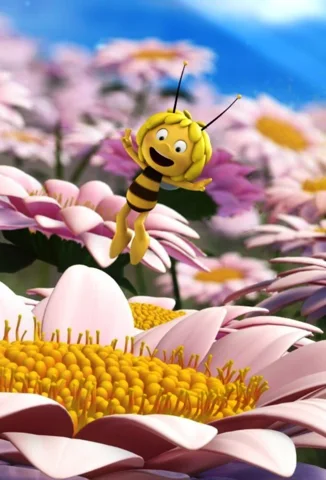
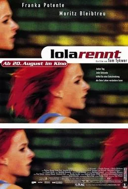
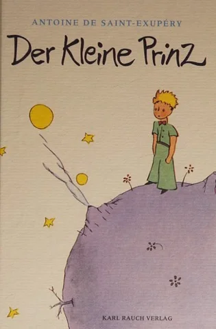

Что смотреть, читать и слушать по уровням
Ютуб, подкасты, мультфильмы, кино, книги и приложения. У каждого материала уровень и совет, как с ним работать: включаешь фильтр и видишь только своё.
Кодовое слово из ролика: ПОДБОРКА



- 50материалов с обложками
- 6бесплатных площадок
- 5уровней от A1 до C1
50 материалов здесь бесплатно. Внутри — 340+ гайдов
Подборка на этой странице — подарок: забирай без оплаты. Если захочется не только смотреть, но и учить по порядку, вот что лежит внутри Stellas сверху.
- 50 материалов с уровнем и советом: ютуб, подкасты, мультфильмы, кино, книги, приложения
- 6 бесплатных площадок со скриншотами
- 5 готовых наборов по уровням A1–C1
- 7 дней в плане: смотреть, слушать, читать
Без регистрации и оплаты. Это уже твоё.
- 340+ гайдов A0–C1 по порядку: объяснение, видео, упражнение, ответы
- 7500+ слов с аудио и транскрипцией
- 269 гайдов к экзаменам Goethe, telc и ÖSD, плюс 40 пробных тестов
- По уровням фильмы, книги и подкасты рядом с грамматикой
- Notion трекер, карточки и повторения, работает офлайн
- Бонус раздел A0–A2 на украинском в пакете A0–C1
План на неделю
- 01
Пн–Ср: смотреть
Одна серия мультфильма или сцена фильма своего уровня, с немецкими субтитрами, дважды.
- 02
Чт–Пт: слушать
Один выпуск подкаста в дороге. Первый раз на слух, второй с текстом, если он есть.
- 03
Сб–Вс: читать
10 страниц книги на ступень ниже своего уровня и пять фраз из неё в тетрадь.
Выключил фильм через десять минут?
Взял сериал не по уровню, ничего не понял и решил, что немецкий не твоё. Дело было в уровне, а не в тебе. В Stellas фильмы, книги и подкасты разложены по уровням, а рядом грамматика и слова на тот же уровень.
Купить Stellas за 30 €Подготовка к экзамену внутри
Аудирование есть в каждом экзамене от A1 до C1: подкасты и сериалы своего уровня тренируют эту часть. В платформе есть отдельный блок по экзаменам: формат, типичные ошибки, шаблоны писем и устной части.
- 120гайдов Goethe
- 89гайдов telc и DTZ
- 60гайдов ÖSD
- 40пробных тестов с разбором
- Lesen
- Hören
- Schreiben
- Sprechen
«Мои ошибки» собирает вопросы, на которых ты ошибся, чтобы повторить их перед экзаменом.
Что пишут ученики


Цена: один раз и навсегда
Обе вместе (2)
Stellas · A0–C1- 340+ гайдов A0–C1
- 7500+ слов с аудио и транскрипцией
- фильмы, книги, подкасты по уровням
- трекер и повторения в Notion, офлайн
- 269 гайдов к экзаменам, 40 пробников
- бонус: A0–A2 на украинском
40 €30 €
Частые вопросы
(01)Это бесплатно?
Ютуб, подкасты, словари и шесть площадок со скриншотов бесплатны. Платные и условно бесплатные приложения подписаны на карточке. Бесплатных материалов в списке — 23, кроме кино и книг.
(02)Какой уровень выбрать?
Тот, где понимаешь большую часть. Если уровень неизвестен, начни с мультфильмов A1–A2: там самая медленная речь.
(03)С какими субтитрами смотреть?
С немецкими. Русские субтитры выключают слух: глаз читает быстрее, чем ухо слышит.
(04)Нужно ли смотреть всё подряд?
Нет. Один материал на неделю и пять фраз из него дают больше, чем десять серий фоном.
(05)А где грамматика?
Грамматика, слова и подборка по уровням — на платформе Stellas, про неё ниже на этой странице.